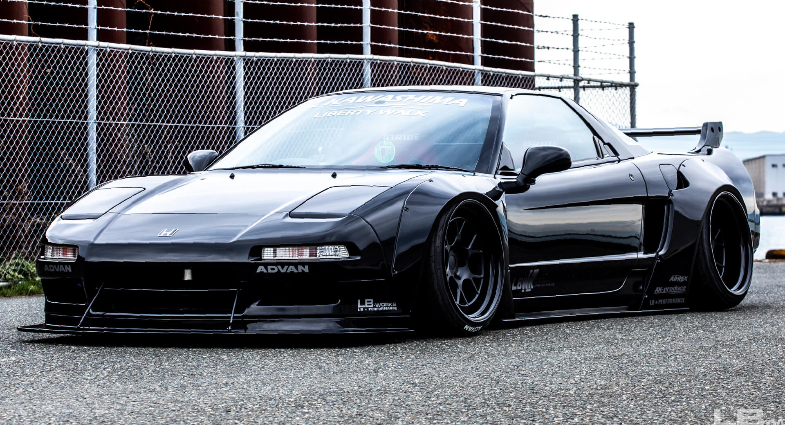

Honda
(Acura) NSX
The Acura NSX is not just a car—it's a legend born from precision, passion, and the relentless pursuit of perfection. When it debuted in 1990, the world was introduced to something that had never been seen before: a Japanese-built supercar that could rival Ferrari and Porsche, not only in performance but in reliability and accessibility. Crafted with an aluminum chassis, a high-revving naturally aspirated V6, and handling honed with input from Formula 1 champion Ayrton Senna, the NSX became a symbol of balance, where engineering mastery and driver connection met in perfect harmony.
Unlike its European rivals, the NSX wasn't about raw power or excess—it was about purity. Every curve of the body, every note of the VTEC surge, and every corner it carved told a story of elegance and discipline. It showed the world that exotic cars didn't need to be temperamental to be extraordinary. To enthusiasts, the NSX is more than just a machine; it's an aura of timeless design, unshakable legacy, and the spirit of Japanese craftsmanship at its peak. Even today, decades after its release, the first-generation NSX remains one of the most respected icons in automotive history.

Technical Specs (NA1/NA2 NSX)
- Engine: 3.0L (C30A) / 3.2L (C32B) Naturally Aspirated V6
- Horsepower: 270-290 hp
- Torque: ~210-224 lb-ft
- Transmission: 5-speed manual / 6-speed manual (later) or 4-speed automatic
- Drivetrain: Mid-engine, Rear-wheel drive
- 0-60 mph: ~5.0-5.7 seconds
- Top Speed: ~168-175 mph (270-280 km/h)
- Weight: ~3,000 lbs (1,360 kg)